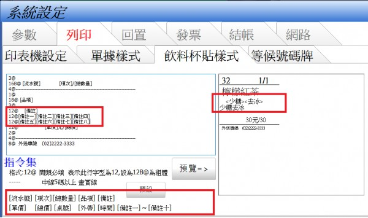

回問題列表 標籤機問題 Q4180 硬體問題 jack Jan 22, 2020 你好 我已經購買標籤機使用 確實是可以使用 但問題是標籤機無法對位 客人點餐只要超過紙張就會沒印到 是否有標籤紙對位的設定 另外在請問 購買正式版 是匯款後 會有正版的下載網址嗎??? 1 個回答 回答 #4181 advpos Jan 22, 2020 您好[客人點餐只要超過紙張就會沒印到 ]是指備註部分嗎備註是可以分段表達的請參考此圖設定及這篇文章767.html 如果您指的不是備註 煩請拍攝照片附圖 以利站長了解問題所在附圖方法414.html 2.不會有另外下載網址 購買後會寄送USB key PRO至您府上 插上電腦後立即解除試用限制
回答 #4181 advpos Jan 22, 2020 您好[客人點餐只要超過紙張就會沒印到 ]是指備註部分嗎備註是可以分段表達的請參考此圖設定及這篇文章767.html 如果您指的不是備註 煩請拍攝照片附圖 以利站長了解問題所在附圖方法414.html 2.不會有另外下載網址 購買後會寄送USB key PRO至您府上 插上電腦後立即解除試用限制